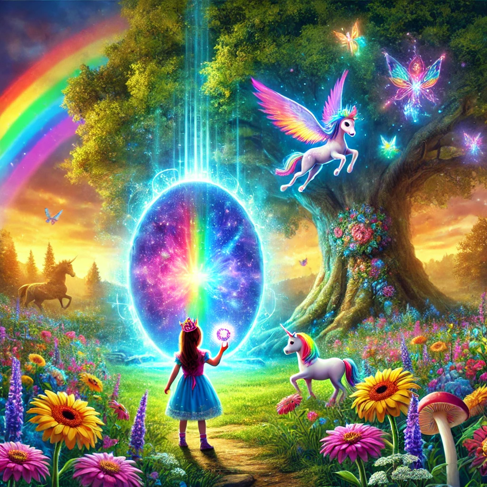

La Puerta Mágica de los Sueños

Había una vez una niña llamada Ana que vivía en un pequeño pueblo rodeado de montañas. Ana era una niña alegre y soñadora, que siempre imaginaba mundos mágicos más allá del arcoíris. Cada vez que veía un arcoíris en el cielo después de la lluvia, deseaba con todo su corazón poder visitarlo y explorar lo que había al otro lado.
Un día, mientras jugaba en el jardín, Ana encontró una pequeña piedra brillante enterrada en la tierra. La piedra brillaba con los colores del arcoíris, y Ana sintió que era algo muy especial. Decidió llevarla consigo y guardarla en su bolsillo.
Esa noche, Ana tuvo un sueño muy vívido. Soñó que la piedra brillante la llevaba a un lugar mágico llamado el Mundo Arcoíris. En este mundo, todo estaba hecho de colores brillantes y vibrantes: los árboles tenían hojas de todos los colores, los ríos fluían con agua multicolor, y el cielo siempre mostraba un arcoíris gigante que lo abarcaba todo.
Al despertar, Ana supo que tenía que encontrar la manera de llegar al Mundo Arcoíris. Recordó que en su sueño, la piedra había abierto un portal secreto en el bosque cercano. Sin perder tiempo, Ana se dirigió al bosque con la piedra en mano. Caminó entre los árboles y, después de un rato, encontró un portal mágico escondido en la base de un gran roble. Con emoción, usó la piedra brillante para activar el portal.
Al cruzar el portal, Ana se encontró en el Mundo Arcoíris, tal como lo había soñado. Todo era hermoso y lleno de colores que nunca había visto antes. Conoció a muchas criaturas mágicas, como unicornios de arcoíris y hadas luminosas que la guiaron por el reino.
Ana exploró el Mundo Arcoíris, descubriendo lugares maravillosos y haciendo nuevos amigos. Se bañó en cascadas de colores, voló con los pájaros del arcoíris y jugó con las mariposas más hermosas que jamás había visto. En cada rincón, había algo nuevo y mágico que la dejaba maravillada.
Finalmente, cuando el sol comenzó a ponerse y los colores del arcoíris se hicieron aún más brillantes, Ana supo que era hora de regresar a casa. Con un corazón lleno de alegría y recuerdos mágicos, se despidió de sus nuevos amigos y prometió que algún día volvería.
Y así, Ana regresó a su pueblo, llevando consigo la piedra brillante y un sinfín de historias mágicas que contar. Cada vez que veía un arcoíris en el cielo, sonreía recordando su increíble aventura en el Mundo Arcoíris, sabiendo que los sueños pueden hacerse realidad.
Y colorín colorado, este cuento se ha acabado. Buenas noches, Alondra. ¡Dulces sueños!